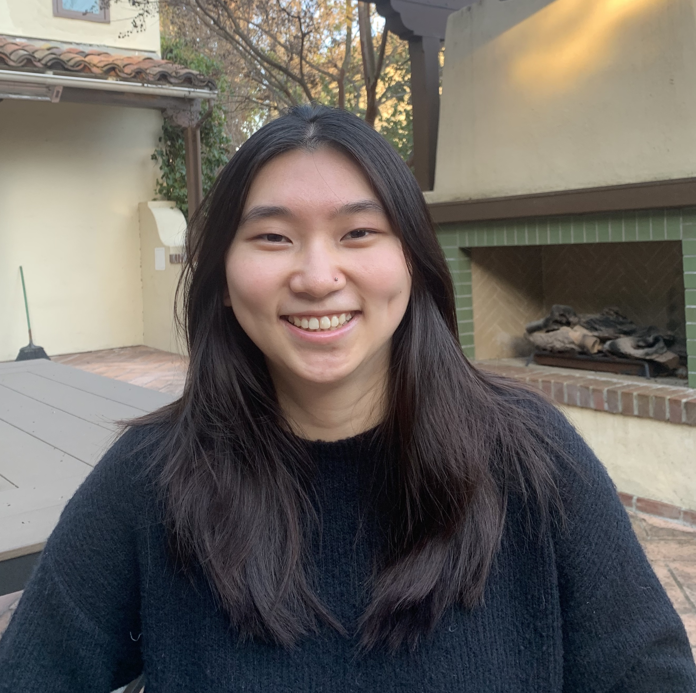

Kristen Fu
Description
I'm Kristen, a third-year Cognitive Science major and Digital Humanities minor at UCLA.
My main goal as a critical digital map maker is to serve underrepresented minority groups
and communities through community-based and ethical uses of GIS and data.
I aim to learn more about how to use mapping and data for long-term and sustainable social change
through taking Asian-American 191A.
Interests
My academic interests include cognitive science, psychology, and digital humanities. In terms of psychology,
I'm especially interested in the areas of social, developmental, and evolutionary psychology.
Outside of school, my interests include reading, crocheting, and trying new foods. I also enjoy
watching new TV shows and movies!
Learn more about me by clicking here :)